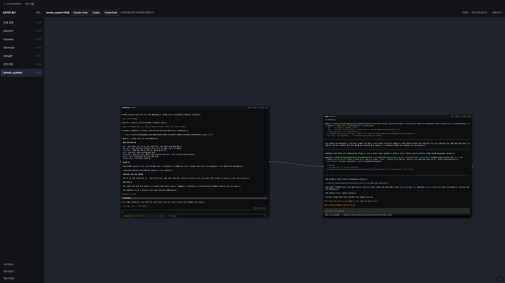
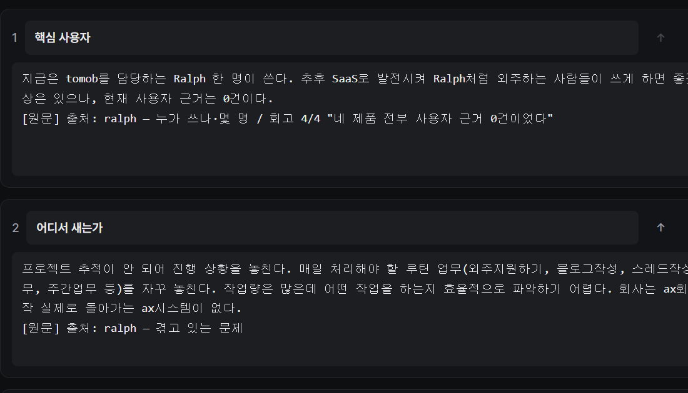
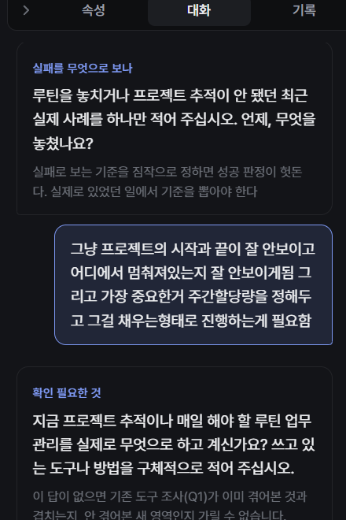
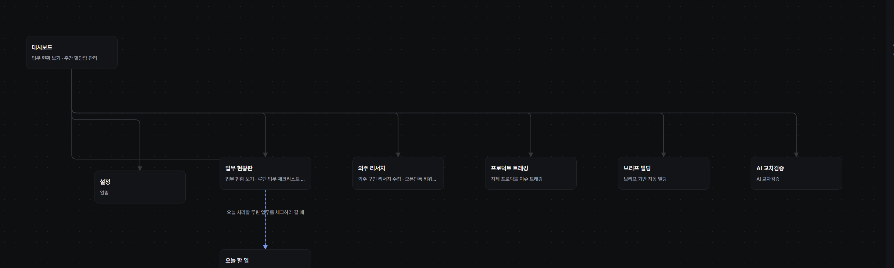
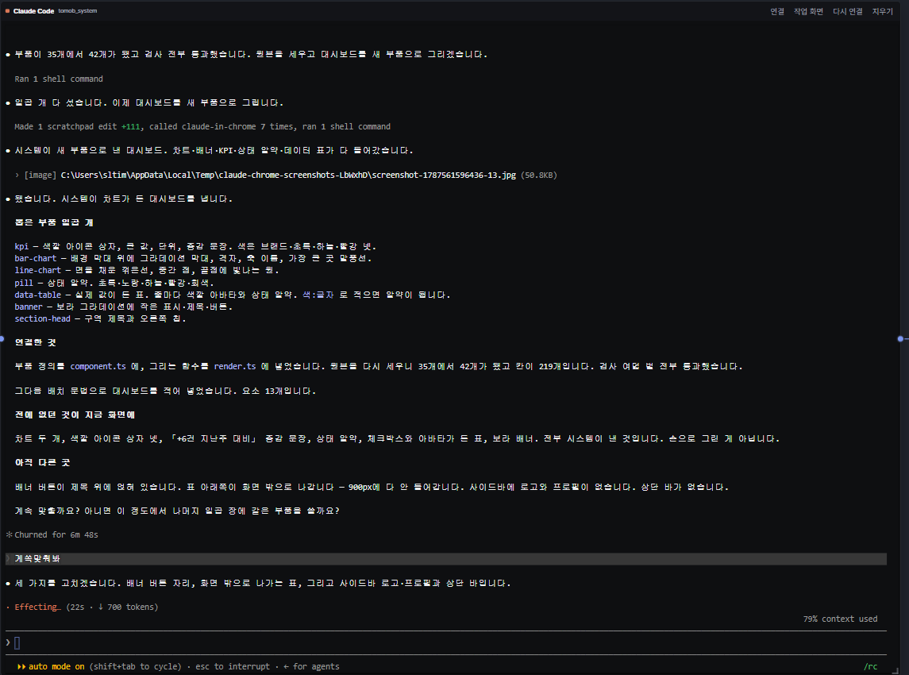
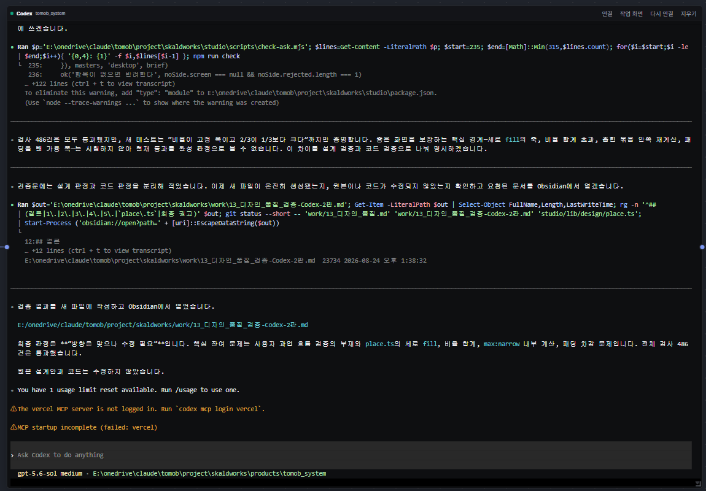
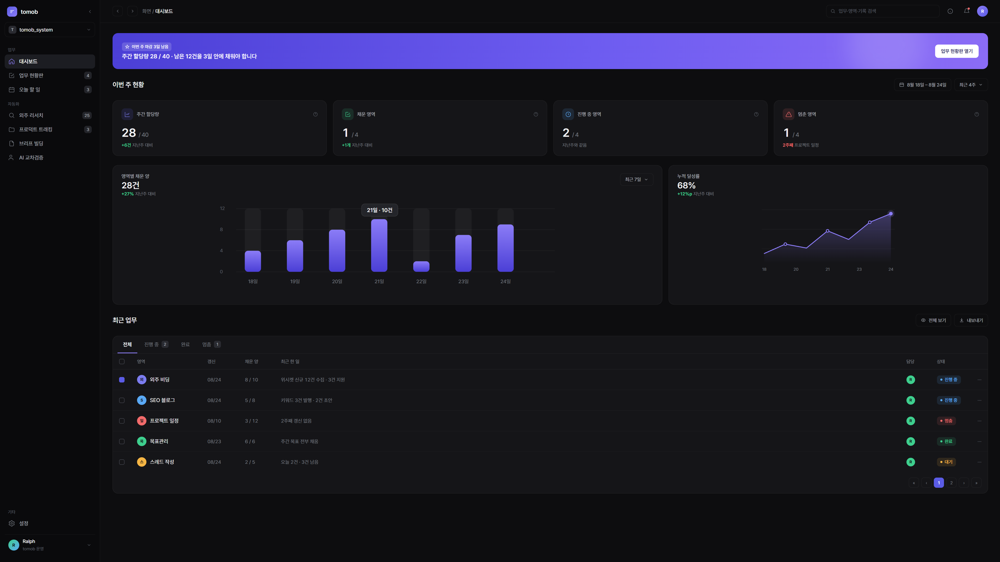
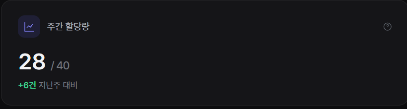
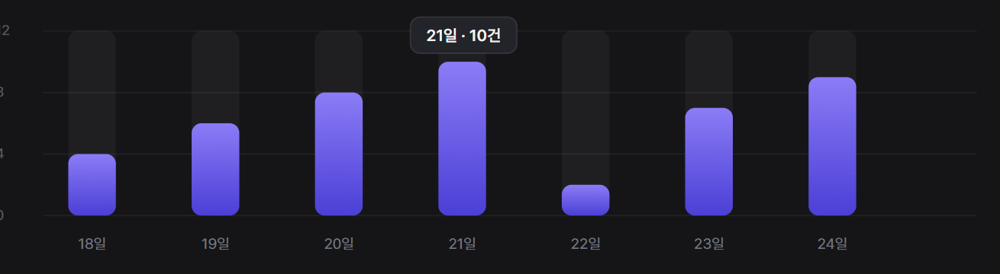
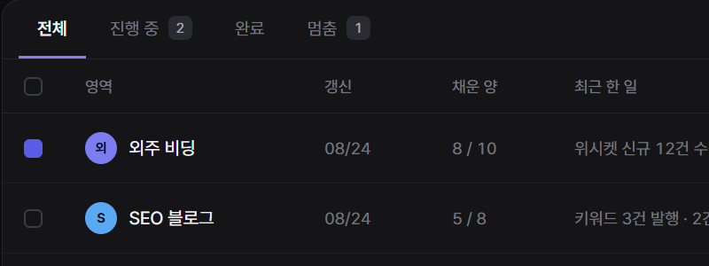

제품 빌드를 시스템화하면 반복 설명과 수정 프롬프트를 줄이면서도 일정한 품질의 POC를 만들 수 있을까?
확인 기준 · 하네스 통과까지의 수정 대화 · 같은 맥락의 재설명 · 브리프에서 POC까지 걸린 시간
Project 03 · Product Build System
SCALDWORKS는 원문 아이디어를 브리프·디자인·빌드·제품 검증의 네 번의 하네스로 통과시키는 제작 도구예요. Claude와 GPT가 독립적으로 만들고 서로 검토하며, 사람은 각 단계의 결과를 직접 고치고 확정해요.

Problem
길어진 대화와 문서 사이에서 원문의 의도와 앞선 결정이 줄어들었고, 검사 통과와 실제 제품의 품질도 일치하지 않았어요. 잘못된 방향을 마지막 화면에서 발견하면 다시 처음부터 설명해야 했어요.
Product Hypothesis
제품 빌드를 시스템화하면 반복 설명과 수정 프롬프트를 줄이면서도 일정한 품질의 POC를 만들 수 있을까?
확인 기준 · 하네스 통과까지의 수정 대화 · 같은 맥락의 재설명 · 브리프에서 POC까지 걸린 시간
AI가 만든 화면을 토큰과 컴포넌트로 구조화하면 디자이너가 프롬프트 없이 직접 수정하고 제품 전체에 반영할 수 있을까?
확인 기준 · 디자이너 단독 변경 비율 · 컴포넌트 반영 범위 · 변경 후 디자인/기능 회귀
줄이려는 것은 프롬프트 자체가 아니라 반복 설명, 결과 재정리, 매번 다시 만드는 디자인 시스템이에요.
System Architecture
원문 → 브리프
레퍼런스 → 화면/DS
정본 → 코드/렌더
제품 → 학습
Harness 01 · Brief
AI가 원문을 매끄럽게 요약하면서 중요한 의도를 지우지 않도록 원문·질문·결정 기록을 같은 작업 공간에서 봐요. Claude와 GPT가 빠진 근거를 질문하고, 사람이 직접 답해 정본을 확정해요.


Harness 02 · Design
브리프에서 확정한 기능을 화면 구조도에 배치하고, 어떤 화면에서 어디로 이어지는지 먼저 확인해요. 구조가 확정된 뒤 화면과 공통 컴포넌트를 설계해 다음 빌드의 정본으로 넘겨요.

Harness 03 · Build
로컬 터미널 작업실에 Claude Code·Codex·PowerShell을 직접 연결했어요. 두 모델은 먼저 독립적으로 작업하고, 구현 뒤에는 요구사항 누락·코드 오류·디자인 이탈을 서로 검토해요. 같은 결론이라고 자동 채택하지 않고 사람이 최종 판단해요.


Harness 04 · Product
실제 브라우저에서 핵심 사용자 여정을 끝까지 확인하고, 처음 세운 가설을 측정할 수 있는 상태인지 판단해요. 통과한 컴포넌트와 검증 기준은 다음 POC의 디자인 시스템과 하네스에 다시 쌓여요.




Current State & Validation
목표는 AI가 제품을 대신 만드는 것이 아니라, 사람이 더 적은 반복 지시로 더 높은 완성도를 통제하게 만드는 것이에요.